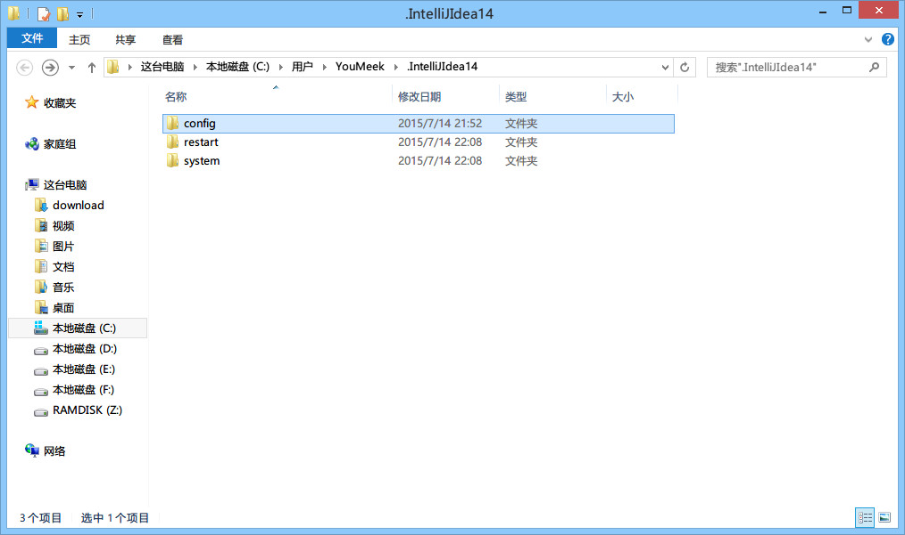
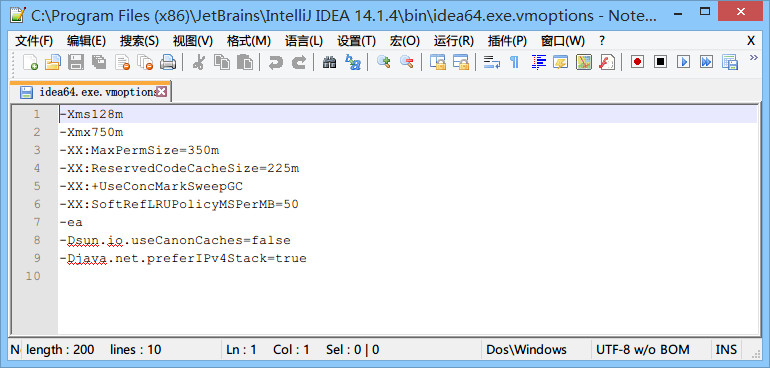
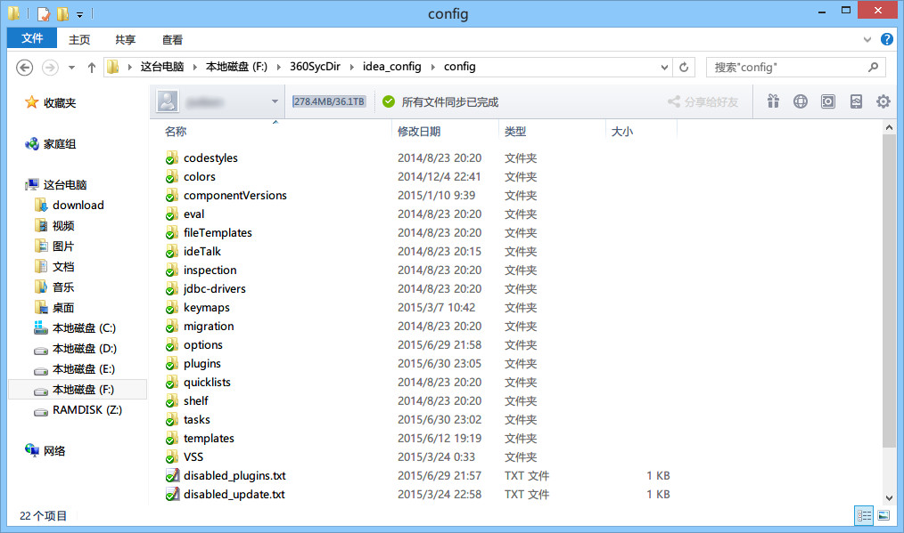

8 IntelliJ IDEA 相关核心文件和目录介绍
安装目录介绍

图片 8.1 安装目录介绍
- IntelliJ IDEA 的安装目录并不复杂，上图为最常改动的 bin 目录，经常会改动的文件或是必须介绍就是如图红色框中的几个。
idea.exe文件是 IntelliJ IDEA 32 位的可行执行文件，IntelliJ IDEA 安装完默认发送到桌面的也就是这个执行文件的快捷方式。idea.exe.vmoptions文件是 IntelliJ IDEA 32 位的可执行文件的 VM 配置文件，具体配置修改会下面进行专门讲解。idea64.exe文件是 IntelliJ IDEA 64 位的可行执行文件，要求必须电脑上装有 JDK 64 位版本。64 位的系统也是建议使用该文件。idea64.exe.vmoptions文件是 IntelliJ IDEA 64 位的可执行文件的 VM 配置文件，具体配置修改会下面进行专门讲解。idea.properties文件是 IntelliJ IDEA 的一些属性配置文件，具体配置修改会下面进行专门讲解。
设置目录介绍

图片 8.2 设置目录介绍
- 不管你使用的是哪个操作系统，IntelliJ IDEA 的设置目录命名是统一的、有规律：.IntelliJ IDEA14。其中 14 表示大版本号，如果你电脑上还同时装有 13 的版本，那则还应该会有一个：
.IntelliJ IDEA13的设置目录，其他版本道理一样。- 在三大主流的操作系统上，你只要对整个硬盘进行搜索：
.IntelliJ IDEA14，即可找到，无需可以去记忆到底生成在哪个目录下。- 对于这个设置目录有一个特性，就是你删除掉整个目录之后，重新启动 IntelliJ IDEA 会再自动帮你再生成一个全新的默认配置，所以很多时候如果你把 IntelliJ IDEA 配置改坏了，没关系，删掉该目录，一切都会还原到默认，我是很建议新人可以多自己摸索 IntelliJ IDEA 的配置，多几次还原，有助于加深对 IntelliJ IDEA 的了解。
config目录是 IntelliJ IDEA 个性化化配置目录，或者说是整个 IDE 设置目录。也是我个人认为最重要的目录，没有之一，如果你还记得安装篇的介绍的时候，安装新版本的 IntelliJ IDEA 会自动扫描硬盘上的旧配置目录，指的就是该目录。这个目录主要记录了：IDE 主要配置功能、自定义的代码模板、自定义的文件模板、自定义的快捷键、Project 的 tasks 记录等等个性化的设置。system目录是 IntelliJ IDEA 系统文件目录，是 IntelliJ IDEA 与开发项目一个桥梁目录，里面主要有：缓存、索引、容器文件输出等等，虽然不是最重要目录，但是也是最不可或缺目录之一。
配置文件常见修改内容说明

图片 8.3 JVM 配置说明
- 上图是 64 位可执行文件的 JVM 配置文件内容，如果你是 32 位的系统你应该修改的是
idea.exe.vmoptions文件里面的内容，但是由于 32 位系统内存一般都是 2G 左右的，所以也没有多大空间可以调整，所以一般无需调整的。- 修改的原则主要是根据自己机器的内存情况来判断的，我个人是建议 8G 以下的机子或是静态页面开发者都是无需修改的。如果你是开发大型项目、Java 项目或是 Android 项目，并且内存大于 8G，建议进行修改，常修改的就是下面 4 个参数，我这里主要以我的机子会例进行建议，每个人机子情况不一，这里也只是做一个引子，最好的调整方式是你可以根据 jconsole 这类工具进行观察后个性化调整。
-Xms128m，16 G 内存的机器可尝试设置为-Xms512m-Xmx750m，16 G 内存的机器可尝试设置为-Xmx1500m-XX:MaxPermSize=350m，16G 内存的机器可尝试设置为-XX:MaxPermSize=500m-XX:ReservedCodeCacheSize=225m，16G 内存的机器可尝试设置为-XX:ReservedCodeCacheSize=500m

图片 8.4 JVM 配置说明
- 上图是 IntelliJ IDEA 一些属性配置，没有 32 位和 64 位之分，修改原则主要根据个人对 IntelliJ IDEA 的个性化配置情况来分析。常修改的就是下面 4 个参数：
idea.config.path=${user.home}/.IntelliJIdea/config，该属性主要用于指向 IntelliJ IDEA 的个性化配置目录，默认是被注释，打开注释之后才算启用该属性，这里需要特别注意的是斜杠方向，这里用的是正斜杠。idea.system.path=${user.home}/.IntelliJIdea/system，该属性主要用于指向 IntelliJ IDEA 的系统文件目录，默认是被注释，打开注释之后才算启用该属性，这里需要特别注意的是斜杠方向，这里用的是正斜杠。如果你的项目很多，则该目录会很大，如果你的 C 盘空间不够的时候，还是建议把该目录转移到其他盘符下。idea.max.intellisense.filesize=2500，该属性主要用于提高在编辑大文件时候的代码帮助。IntelliJ IDEA 在编辑大文件的时候还是很容易卡顿的。idea.cycle.buffer.size=1024，该属性主要用于控制控制台输出缓存。有遇到一些项目开启很多输出，控制台很快就被刷满了没办法再自动输出后面内容，这种项目建议增大该值或是直接禁用掉，禁用语句idea.cycle.buffer.size=disabled。
设置目录进行多台设置同步化处理

图片 8.5 JVM 配置说明
- 上图是我的个性化配置目录，我是存放在 F 盘，同时该目录也是在 360 同步盘中。这样做主要是为了让我的多台设置可以同时使用一个个性化配置，保证个人开发习惯，额外作用就是在服务器上一个备份作用。
- 设置方式很简单，修改
idea.properties属性文件中的idea.config.path值，我的机器为：idea.config.path=F:/360SycDir/idea_config/config